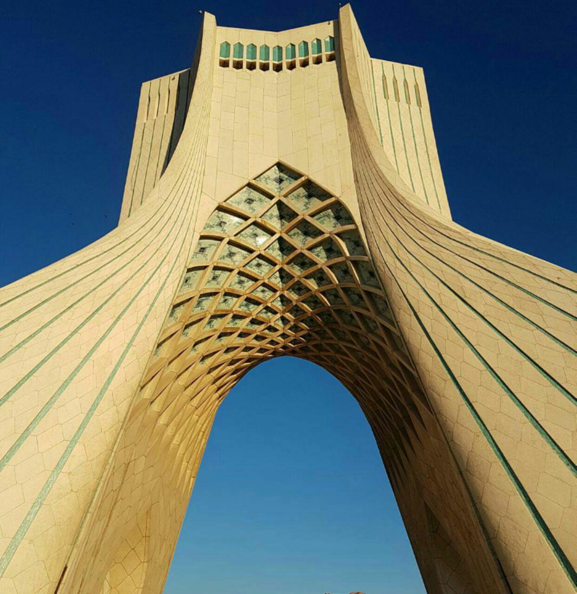
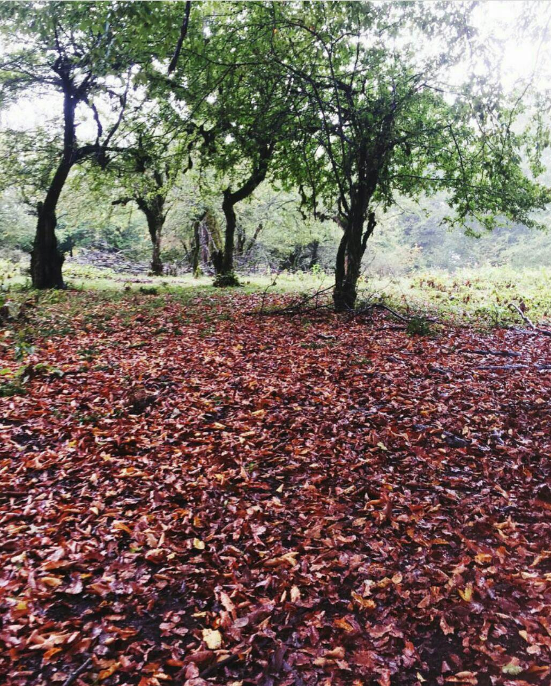
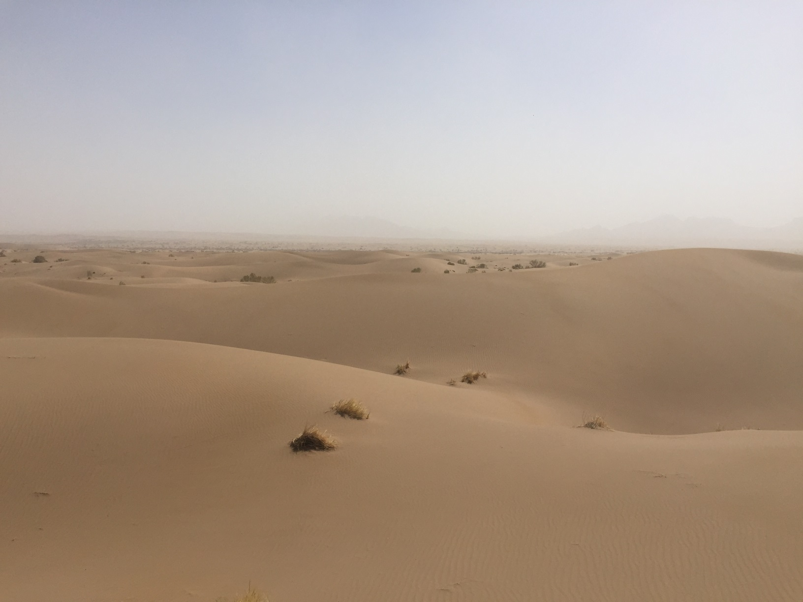
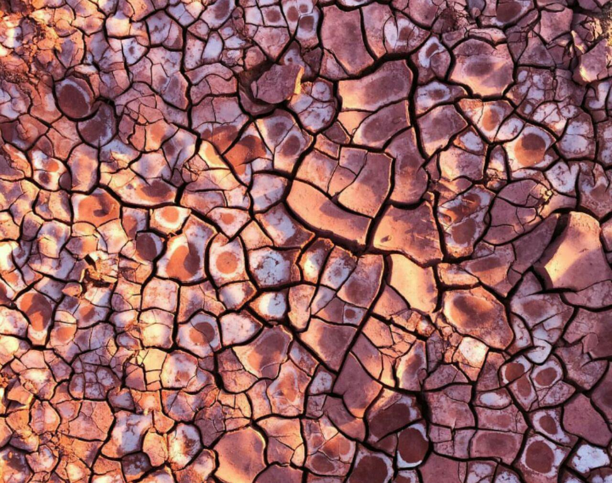
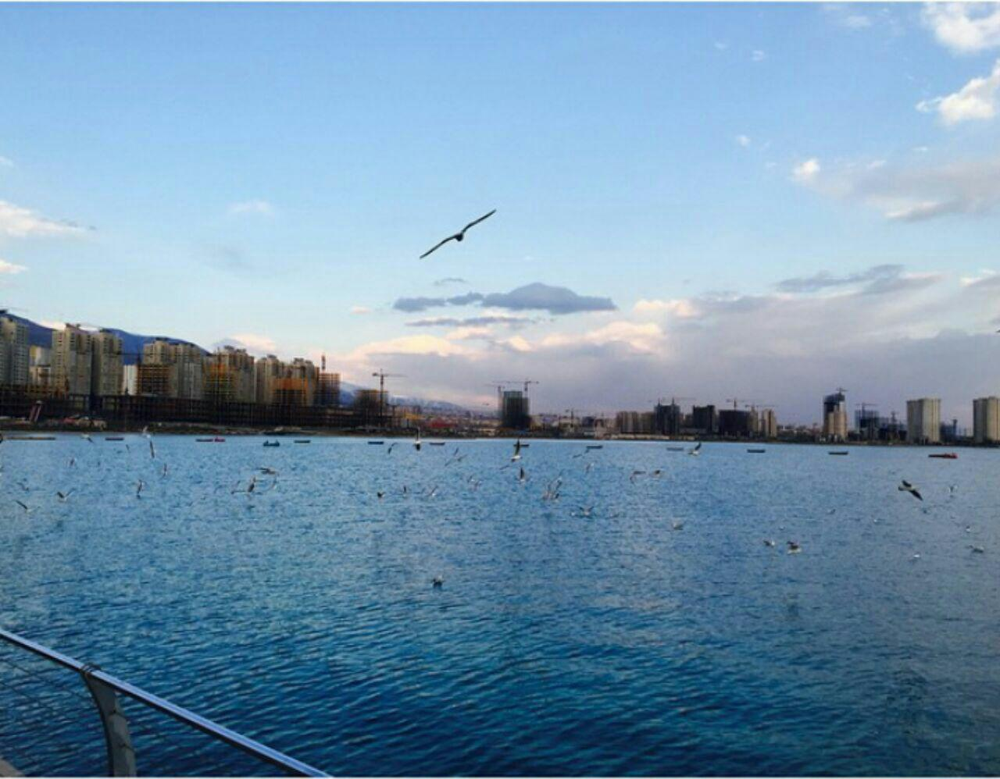

Sharif University

Sharif University of Technology is a public research university in Tehran, Iran known traditionally to be the first choice of top ranked Iranian high school and university students in engineering and physical sciences. The university is located in the Tarasht neighborhood of Tehran within close proximity of Azadi Square.
Azadi Tower
The Azadi Tower formerly known as the Shahyad Tower is a monument located at Azadi Square, in Tehran City, Iran. It is one of the symbols of Tehran, and marks the west entrance to the city. It was commissioned to mark 2,500 years of the Persian Empire.
Amol County
Amol County is a county in Mazandaran Province in Iran. The capital of the county is Amol. At the 2006 census, the county's population was 343,747, in 93,194 families. The county is subdivided into three districts: the Central District, Larijan District, and Dabudasht District.
Mesr Desert

Mesr is a village in Jandaq Rural District, in the Central District of Khur and Biabanak County, Isfahan Province, Iran. At the 2006 census, its population was 183, in 41 families.
Qeshm Island

Qeshm formerly also known as Kishm, is an Iranian island in the Strait of Hormuz, separated from the mainland by the Clarence Strait/Khuran in the Persian Gulf.
Hormuz Island
Hormuz Island is an Iranian island in the Persian Gulf. Located in the Strait of Hormuz, 5 miles off the Iranian coast, the island is part of Hormozgān Province.
Chitgar Lake
Chitgar Lake is an artificial and recreational lake located in the north of Chitgar Park, in northwestern Tehran, Iran. Also known as the Lake of the Martyrs of the Persian Gulf. About 80% of the lake's water comes from Kan Creek, and the remaining 20% comes from central areas and surface runoffs of the district.